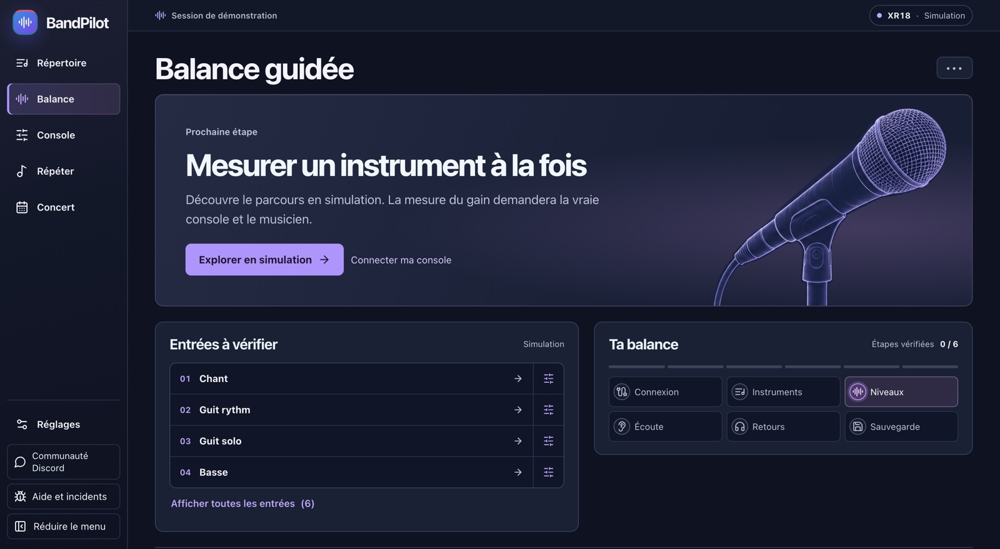
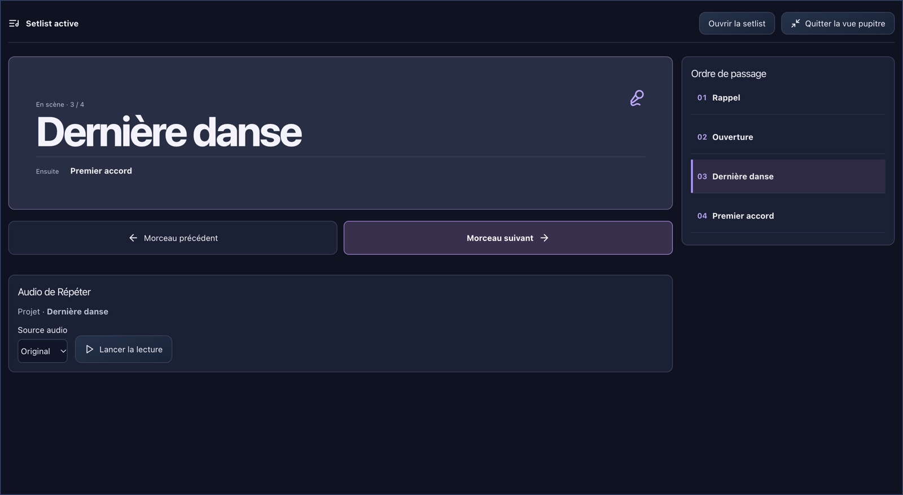
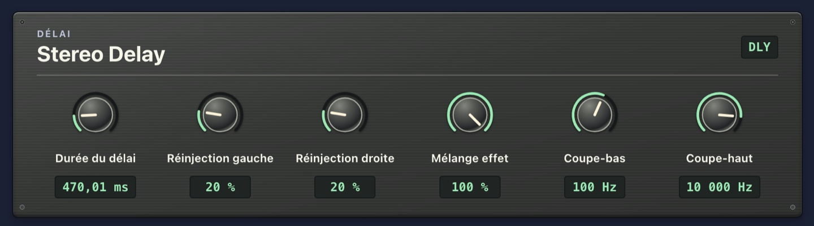

Set up today’s inputs
Start with a blank scene or one you saved. When you confirm a fresh soundcheck with your band, unused inputs and their sends go silent. Preamp gain and phantom power stay as they are.
Guided soundcheck tutorial
BandPilot 3.0.3 Free and open source
Control your X-Air or M-Air mixer from a computer or Android tablet. Run soundcheck, set up each musician’s monitor mix and keep your setlist handy on stage.
Inside the app

Start with a blank scene or one you saved. When you confirm a fresh soundcheck with your band, unused inputs and their sends go silent. Preamp gain and phantom power stay as they are.
Guided soundcheck tutorial
Assign each musician an output. Under Monitors → Phones, share the QR code for their mix on the local network. Saving the lineup updates the links without changing the audio.
Getting started
Arrange songs in rehearsal. At the gig, follow the setlist and open the PDF for the current song.
Getting started
Switch from the essential controls to the Expert mixer to access the faders, sends and processing available on your model.
Getting startedEach X-Air and M-Air effect has its own front panel. On Stereo Delay, turn the knobs to time the repeats to the song. In the mixer, grab the centre of an EQ point and drag it. Monitor mixes show the bus or profile name, with the share button right on the selected mix.
BandPilot 3.0.3 · Release notes
Six physical Aux outputs for monitor mixes. The XR18 has been detected on hardware. The MR18 profile has been checked in simulation.
Two physical Aux outputs for monitors. The USB recorder is stereo. Multitrack recording on a computer requires a different model.
Partial, experimental support. Basic mixing and bus sends are available. Full scenes and personal phone monitoring are still in development.
Desktop release · 3.0.3
On an Android tablet, the APK controls the mixer without a computer. For a personal monitor on a phone, just scan the QR code shared by your band.
On desktop, the REAPER bridge connects rehearsal projects to your repertoire. REAPER is a separate download.
Getting startedAsk questions, share your experience and suggest improvements to BandPilot. Chat in French or English.
Voluntary support helps make time for fixes, mixer testing and guides in five languages. Field reports, translations and sharing the project also help.